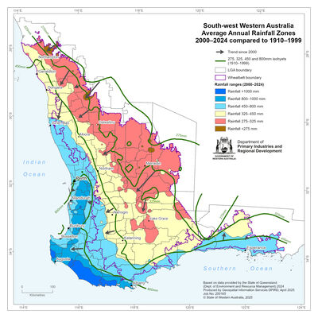

What you'll be able to do by the end
- Draw and read a systems diagram of a WA paddock (inputs, throughputs, outputs, feedback).
- Explain why WA's scale, soils and rainfall shape every agronomic and economic choice in this unit.
- Use water-use efficiency (French-Schultz) to diagnose a yield gap, and explain why yield is a distribution, not a number.
- Justify rotation, no-till and residue decisions as system-level trade-offs, not isolated choices.
Every later lecture in SCIE3314 is one component of the system this lecture maps out today.
Part 1
What Is a System, and Why Does One Paddock Need One?
From the abstract idea of a system to a systems diagram of one WA paddock, then zoomed out to soil, farm and market scale.
What Is a System?
A system is:
- A group of interacting or interrelated elements, acting under a shared set of rules or constraints, to form a unified whole.
- Used to model everything from population dynamics to ecology to engineering — and, as this lecture will show, farm management and soil dynamics too.
Vocabulary You'll Reuse All Semester
- 1Boundaries — inputs, throughputs, outputs.
- 2Dynamics — delays, path dependency, transient vs steady state.
- 3Resilience and tipping points — thresholds beyond which a system shifts state (bifurcation).
Careful: "everything affects everything" is not systems thinking. The actual skill this unit builds is identifying which connections matter for a given agronomic decision — and which can be safely ignored.
The Systems Diagram: One WA Paddock
flowchart LR
RAIN["Rainfall<br/>(input)"] --> SOIL
FERT["Fertiliser<br/>(input)"] --> CROP
SEED["Seed / variety<br/>(input)"] --> CROP
SOIL["Soil<br/>chemistry / physics / biology"] --> CROP["Crop growth<br/>(throughput)"]
MACH["Machinery & tillage choice<br/>(input)"] --> SOIL
MACH --> CROP
CROP --> YIELD["Yield<br/>(output)"]
CROP -- stubble retained --> RESID["Surface residue"]
RESID -- conserves moisture and cools soil --> SOIL
RESID -- ties up nitrogen --> CROP
RESID -- carries disease inoculum --> CROP
YIELD --> FARM["Farm<br/>(cash flow, risk)"]
FARM --> MARKET["Market<br/>(prices, exports)"]
classDef inp fill:#F5F7FF,stroke:#27348B,color:#27348B
classDef out fill:#27348B,stroke:#27348B,color:#fff
class RAIN,FERT,SEED,MACH inp
class YIELD,FARM,MARKET out
Solid arrows = the direct flow from input to output. Dashed-feel loop (residue → soil/crop) = feedback — the same stubble decision from earlier in the lecture, now drawn as a system.
Reading the Diagram: Mapping Vocabulary to Boxes
From slide 3's vocabulary...
- Boundary — the edge of "one paddock."
- Inputs — rainfall, fertiliser, seed, machinery/tillage choice.
- Throughput — soil and crop growth, where inputs are transformed.
- Output — yield, which then becomes an input to the farm and market scales.
...to this diagram's loop
- The residue loop is a feedback loop: today's output (stubble) becomes tomorrow's input.
- It's path-dependent: this season's stubble decision changes next season's disease and nitrogen starting conditions — a "dynamics" idea from slide 3.
Class Exercise: Diagram a Decision
In groups of 3–4:
- Pick one scenario: (a) you sow lupins instead of continuous wheat this season, or (b) you burn the stubble instead of retaining it.
- Sketch a boxes-and-arrows diagram tracing the decision's effects through at least 3 different components from today's paddock diagram (soil, crop protection, machinery, finance).
- Identify one feedback loop in your diagram.
Zooming Into the "Soil" Box
- Chemistry — pH, nutrient availability, salinity, cation exchange capacity.
- Physics — texture, structure, subsoil compaction, water-holding capacity.
- Biology — organic matter, the soil microbiome, mycorrhizal associations, soilborne pathogens.
flowchart TB
MACH["Machinery &
Wheel Traffic
(External Input)"]
COMP["Soil Compaction
(Hardpan / Reduced Porosity)"]
ROOTS["Root System
(Restricted Penetration)"]
SOM["Soil Organic Matter
(Reduced)"]
STRUCT["Soil Structure
(Weakened)"]
MACH --> COMP
COMP --> ROOTS
ROOTS --> SOM
SOM --> STRUCT
STRUCT -.-> COMP
classDef input fill:#F5F7FF,stroke:#27348B,color:#27348B,stroke-width:2px,font-size:14px
classDef stress fill:#FDF2F2,stroke:#D32F2F,color:#9A0007,stroke-width:2px,font-size:14px
classDef normal fill:#EBF3FA,stroke:#005696,color:#003059,stroke-width:2px,font-size:14px
classDef bio fill:#EBF7ED,stroke:#2E7D32,color:#1B5E20,stroke-width:2px,font-size:14px
class MACH input
class COMP stress
class ROOTS,STRUCT normal
class SOM bio
Soil Compaction Feedback Loop: Machinery causes compaction → restricts roots → reduces SOM → weakens structure → increases future compaction vulnerability.
Zooming Into the "Crop Growth" Box
- Seed and variety choice — the genetic starting point.
- Nutrition — fertiliser type, rate and timing.
- Crop protection — herbicides (weeds), fungicides (disease), insecticides (pests) — each with its own mode of action and resistance-management logic.
The Remaining Boxes — and Why None of This Is Independent
Machinery & management
- Machinery & operations — tillage/no-tillage, seeding system, spraying, harvest, grain handling.
- Management layer — record-keeping, financial planning, risk management.
Back to the diagram's feedback loop
- Retaining stubble is a soil-physics choice made via machinery.
- It causes nitrogen tie-up — a soil-chemistry consequence, drawn as the residue → crop arrow.
- It also affects disease carryover — a crop-protection consequence.
This is the holistic project every agronomist manages: not a checklist ticked off in isolation, but a set of interacting technical components — exactly what slide 3's diagram drew.
A Crop Is Not an Event — It's One Phase in a Managed System
Cropping system definition:
- The integrated set of crops, soils, climate, machinery, inputs, and management decisions that together determine what is produced, how sustainably, and at what profit.
- A crop is not an isolated event — a variety sown, sprayed and harvested — it's one phase in a continuous, managed biological system operating across years and decades.
Why Systems Thinking Is This Unit's Core Skill
Retaining stubble to conserve moisture cascades into weed seedbanks, disease carryover, nitrogen tie-up, seeding equipment choice, and frost risk. No single component can be optimised in isolation.
This systems perspective is the thread connecting every subsequent lecture, from crop modelling to global food markets.
Nested Scales: From Soil to Global Market
cm–m, chemistry/physics/biology
today's diagram
business: cash flow, risk
prices, exports, policy
Scales Are Nested, Not Separate
- 1 A soil-chemistry constraint — subsoil acidity —
- 2 becomes a paddock-scale yield-potential problem,
- 3 which becomes a farm-scale financial decision (invest in lime?),
- 4 which is itself shaped by market-scale grain prices.
Reasoning well in this unit means being explicit about which scale a question is being asked at.
The Western Australian Grainbelt
- The crescent from Geraldton in the north, east to Southern Cross, south to Esperance.
- Farms are large, highly mechanised, run by very few people per hectare.
- Ancient, weathered, infertile soils under a winter-dominant Mediterranean rainfall pattern, with no reliable irrigation — a deliberately "low-input, low-output" system by world standards.

Why This Geography Shapes Every Decision in the Unit
Average WA broadacre farm is roughly 3,900 ha — this combination of scale, export orientation, poor soils, variable rainfall and low labour explains why WA growers were among the earliest global adopters of no-tillage, controlled traffic, and precision agriculture.
Roadmap: How This Unit Unpacks Each Component
- L02 Quantitative modelling (hands-on in labs)
- L03 Soil chemistry & nutrition
- L04 – L05 Climate & world context
- L06 – L08 Crop production (cereals, canola, pulses)
- L09 Crop protection (herbicides, spraying)
- L10, L11, L13 Farm-business scale: finance, logistics, precision ag
- L12 Soil biology & disease
- L14 Zoom out to global food markets
Every later lecture is this lecture's systems map, examined one component at a time.
Part 2
The Mediterranean Environment: Water as the Ceiling on Yield
Why WA's seasonal rhythm dictates timing, and how French-Schultz turns rainfall into a yield benchmark.
Why Are We Talking About Water Numbers? Because They're the System's Parameters
flowchart LR
A["Input: water available<br/>(GSR minus ~110mm evaporation)"] --> B["Process: transpiration efficiency<br/>(~20-25 kg grain / ha / mm)"]
B --> C["Output: grain yield (t/ha)"]
C -.->|"actual vs potential"| D["Yield Gap:<br/>diagnose the constraint"]
A -.->|"rainfall varies year to year"| E["Yield Distribution:<br/>a range of outcomes, not one number"]
classDef param fill:#F5F7FF,stroke:#27348B,color:#27348B
class A,B,C param
French-Schultz, the yield gap, and yield-as-a-distribution are not three separate topics — they are the input, process-efficiency, and output parameters of the exact paddock system diagrammed in Part 1, plus how that system behaves under an uncertain input.
The Mediterranean Rhythm
- Cool wet winters, hot dry summers; rain mostly May–October.
- Sow into the autumn "break" (~late April–June); grow on stored + in-season rain.
- Flower in early spring; fill grain into a near-inevitable terminal drought.
Every Input Is Timed Against This Rhythm
Across the season
- Summer: weed control, stubble management.
- The break: seeding, pre-emergent herbicides.
- Winter: nitrogen, in-crop weed control.
- Spring: fungicides, flowering-time management. Summer: harvest.
The "window": each operation has an optimal period — the art of farming at scale is finishing every operation, across the whole farm, inside that window despite weather, machinery and labour constraints.
Water as the First Limiting Resource
- No irrigation: growing-season rainfall + stored subsoil moisture sets the production ceiling.
- Water balance: only a fraction of rainfall is transpired productively — the rest is lost to soil evaporation, runoff, deep drainage, and weeds.
Each cultivation pass over bare soil can lose roughly 15–20 mm of stored rainfall straight to evaporation — one pass can cost a paddock a meaningful fraction of its whole-season water budget.
Water-Use Efficiency: The French-Schultz Benchmark
- WUE = grain yield produced per millimetre of water used (kg grain/ha/mm).
- French & Schultz (1984): potential yield ≈ f(growing-season rainfall − ~110mm soil evaporation loss).
- The slope of that relationship — transpiration efficiency — is the biological potential: 20 kg/ha/mm for wheat, ~25 for barley/oats, ~12 for canola, ~15 for pulses.
Reading the French-Schultz Line: The Yield Gap

- Across WA, actual yields typically reach only 50–80% of water-limited potential — some paddocks as low as 30%.
- Management (not environment) explains up to 36% of that gap — weeds, disease, nutrition, subsoil constraints, poor variety.
- Counter-intuitively, the gap is often narrower in low-rainfall zones (<250mm) and wider in higher-rainfall zones, where more water means more ways to lose it.
Closing the Yield Gap: Two Routes
Genetic improvement
- Breeding lifts transpiration efficiency, harvest index, and tolerance to frost, heat and disease (e.g. semi-dwarf wheat varieties).
- Steadily raises the achievable slope of the WUE line over decades.
Agronomic improvement
- Earlier and more reliable sowing, better nutrition, effective weed/disease control, controlled traffic to reduce compaction.
- Moves actual yield closer to potential within a given season.
The historical record is decisive on which route has mattered more: roughly 70% of WA's yield gains since the 1970s are attributed to management improvements, not genetic advances — most students assume it's the other way around.
Yield Is a Distribution, Not a Number
In a variable climate:
- In a good year, a paddock may approach its water-limited potential; in a drought year, the potential itself collapses.
- Industry tools like Yield Prophet (built on the APSIM crop model) formalise this using rainfall deciles (1–9) — a probabilistic forecast of likely yield outcomes given the season so far, not a single predicted number.
- This motivates matching input investment to seasonal outlook — e.g. spending on nitrogen in proportion to the water the season is likely to deliver.
So What Did We Just Optimise?
Input
- Growing-season rainfall minus ~110mm evaporation — mostly outside a grower's control.
Process
- Transpiration efficiency (WUE) — the parameter genetics and agronomy both try to raise.
Output
- Yield — measured against potential (the gap) and understood as a distribution, not a point.
This is Part 2 mapped back onto the systems diagram from Part 1 — the same input/process/output structure, now with real numbers attached.
Part 3
Rotation and Records: Managing the System Over Years
Why crop sequence is the cheapest lever available, and why memory (records) is what makes multi-year decisions rational.
Why Rotate? Disease and Weed Mechanisms
- Disease break: many important pathogens (take-all, crown rot, blackleg, rhizoctonia to a degree) are host-specific and survive on residue or in soil between seasons — a non-host break crop starves the pathogen and collapses its inoculum. A wheat-after-lupin break can cut take-all incidence from roughly 54% down to 15–19%.
- Weed control: rotating crops allows rotation of herbicide modes of action and of the timing/type of weed control (e.g. a break crop permits grass-selective chemistry unusable in a cereal), slowing herbicide resistance and running down grass-weed seedbanks.
Why Rotate? Nitrogen, Soil, and Where the Value Shows Up
- Nitrogen supply: grain legumes (lupin, field pea, faba bean) fix atmospheric nitrogen via Rhizobium symbiosis — faba beans alone can fix up to ~192 kg N/ha — leaving a nitrogen credit for the following cereal.
- Nitrogen immobilisation avoided: cereal residues have a high carbon:nitrogen ratio (40–100:1) that locks up soil nitrogen as it breaks down; legume residues (C:N <20:1) don't cause this problem.
- The legume effect on yield: wheat following a legume break has been shown to yield 86–203% more than continuous wheat in WA trial data.
The value of a break crop is often realised not in its own gross margin but in the yield lift and cost saving it delivers to the subsequent cereal — a systems-level accounting that continuous wheat obscures.
The Classic WA Rotations — Cereal-Legume
- Wheat-lupin on the sandplain, or wheat-field pea / wheat-faba bean on heavier soils.
- Pairs a nitrogen-fixing pulse with a cereal that exploits both the nitrogen credit and the disease break.
- Rhizobia inoculants are strain-specific (e.g. Group G for lupins) and are recommended for re-inoculation every 5–7 years, since persisting soil strains can genetically drift toward less-efficient nitrogen fixers over time.
The Classic WA Rotations — Cereal-Canola
- Wheat-canola or barley-canola.
- Canola gives a broadleaf disease and grass-weed break, with the added advantage of a valuable oilseed cash crop.
- Has expanded enormously since the 1990s.
The Classic WA Rotations — Diversified Sequences and Pasture
- Longer sequences (e.g. canola-wheat-barley-lupin) spread risk across markets and diversify weed/disease pressure.
- On mixed farms, a pasture phase historically provided the nitrogen and weed break — a role now partly displaced by pulses and chemical fallow.
- Fallow water storage is strongly soil-dependent: clay soils can store up to ~125mm over summer, sandy soils as little as ~38mm — a big part of why break-crop viability varies so much by soil type across the grainbelt.
Commodity prices, herbicide-resistance pressure, and seasonal outlook shift the balance between these options every year — the "ideal" rotation on paper is constantly traded off against cash flow and the risk of a break crop failing in a dry start.
The Wheat-Dominance Problem
Why systems stay wheat-heavy despite the agronomic case for diversity:
- Wheat is lower-risk: deep, liquid markets, established agronomy, reliable establishment in dry starts.
- Break crops — particularly pulses — are riskier: more sensitive to seasonal conditions, prone to disease and harvest difficulties, thinner and more volatile markets.
Implementing Diverse Rotations Successfully
- Match the break crop to soil type (lupins on deep sands, faba beans on heavier high-pH soils, canola widely).
- Use the break crop strategically ahead of the highest-value or most weed/disease-threatened cereal.
- Manage agronomic risk through variety choice, sowing time, integrated weed/disease programs.
- Value the rotational benefit explicitly in the whole-farm gross margin, not crop-by-crop.
Accelerating driver: herbicide-resistant annual ryegrass increasingly forces growers into break crops and non-chemical tactics whether or not the single-year economics favour them.
Records: The Memory of the System
- Because the benefits and costs of rotation, lime, herbicide use and nutrition play out over multiple years, decisions cannot be made rationally without a reliable history.
- Modern farm management increasingly captures this digitally — from machine-logged operations, yield maps, and soil and tissue tests, feeding tools like Yield Prophet from slide 23.
What to Track, and the Cost of Not Tracking It
- What was grown and yielded in each paddock.
- Herbicides applied — and therefore resistance and residual-carryover risk.
- Soil test results and lime history; fertiliser inputs and nutrient balance; disease and weed observations.
Herbicide plant-back/resistance problems, mis-timed or mis-placed inputs, and an inability to diagnose why a paddock under-performs.
Part 4
Tillage and Machinery: A System, Not a Single Practice
WA's fastest agronomic transition — and why some tillage is deliberately kept.
Why WA Abandoned the Plough
- Traditional multi-pass cultivation on WA's fragile, sandy, low-organic-matter soils caused severe wind and water erosion.
- It caused loss of soil structure and organic carbon, and moisture loss from the seedbed at exactly the time moisture was most precious — each cultivation pass loses roughly 15–20mm of stored rainfall to evaporation (the same figure from slide 19).
- It also meant enormous fuel, labour and time costs across huge areas in narrow seeding windows.
The Tillage Revolution
- Late 1980s through the 2000s: rapid shift from intensive cultivation to no-tillage (zero-till, direct drilling) across the WA grainbelt.
- No-till adoption across the WA wheatbelt now sits at roughly 98% — one of the most complete agronomic transitions in world agriculture.
- Enabled by the coincident arrival of effective knockdown herbicides (glyphosate), which made weed control without cultivation possible.
From Conventional to No-Till: The Transition
%%{init: {'theme':'base', 'themeVariables': { 'fontSize':'16px'}}}%%
flowchart LR
A["Conventional Tillage
(Pre-1990s)"]
A --> B["Repeated cultivation"]
B --> C1["✓ Weed control
without herbicides"]
B --> C2["✓ Seedbed preparation"]
B --> D1["✗ Soil disturbance"]
B --> D2["✗ Wind & water erosion"]
B --> D3["✗ Organic matter decline"]
B --> D4["✗ Moisture loss"]
D2 --> E["Need for a new system"]
E --> F["No-Till / Direct Drilling
(Current system)"]
F --> G["Minimal soil disturbance"]
G --> H1["✓ Residue retained"]
G --> H2["✓ Reduced erosion"]
G --> H3["✓ Better water infiltration"]
G --> H4["✓ Higher soil carbon"]
G --> I1["✗ Weed control relies on herbicides"]
G --> I2["✗ Herbicide resistance"]
G --> I3["✗ Greater management complexity"]
I2 --> J["Next challenge:
Integrated Weed Management"]
classDef good fill:#E8F5E9,stroke:#2E7D32,color:#1B5E20;
classDef bad fill:#FDECEC,stroke:#B71C1C,color:#7F0000;
classDef neutral fill:#F5F7FF,stroke:#27348B,color:#27348B;
class A,E,F,J neutral;
class C1,C2,H1,H2,H3,H4 good;
class D1,D2,D3,D4,I1,I2,I3 bad;
Principle 1: Minimum Soil Disturbance
- Preserves soil structure, protects soil biota and mycorrhizal networks.
- Keeps organic matter and its associated nutrients and water-holding capacity intact.
- Documented WA no-till systems have reached WUE of roughly 17 kg grain/ha/mm — nearly double some conventional-tillage comparisons — almost entirely through better moisture conservation.
Principle 2: Permanent Soil Cover
- Retained stubble and crop residue dissipate the kinetic energy of raindrops, preventing soil sealing (surface crusting) and keeping infiltration biopores open.
- Moderates soil temperature and slows evaporation.
- Feeds the soil biology that builds structure and cycles nutrients.
Principle 3: Crop Rotation and Diversity — and Why All Three Reinforce Each Other
- As developed in Part 3: diverse sequences break disease and weed cycles and diversify the biological benefits to the soil.
No-tillage without stubble retention leaves soil exposed. Stubble retention without rotation concentrates disease and weeds. Conservation agriculture is a system, not a single practice — its full benefit emerges only when all three are applied together over time.
The Case for Some Tillage: What Persistent No-Till Can Cause
- Hard-setting or water-repellent surface soils.
- Stratification of nutrients and lime in the top few centimetres; subsoil compaction.
- Herbicide-resistant weed seedbanks concentrated near the surface; build-up of stubble-borne disease.
Strategic Tillage Tools
- Deep ripping — one-off, to shatter subsoil compaction and open sandplain hardpans.
- Mouldboard ploughing / spading — to bury water-repellent topsoil and non-wetting sands, incorporate lime to depth, and bury weed seed.
- Delving — on duplex soils, bringing clay up from depth to the surface to improve the water-holding capacity of a sandy topsoil.
Compare with controlled traffic farming (CTF), the non-tillage fix for compaction: confining machinery to permanent RTK-GPS-guided tracks (~2cm accuracy) shrinks the compacted "wheeled area" of a paddock from ~50% to ~15%, can add up to 75mm of plant-available water, cut fuel use by up to 50%, and lower operating costs by ~10%.
Seeding Machinery: Tine Openers

- Robust, lower cost, effective at breaking through hard-setting soils and placing fertiliser deeply.
- Better incorporation of volatile pre-emergent herbicides (e.g. trifluralin) into the soil, and generally regarded as safer for crop establishment.
- Disturbs more soil (bringing up weed seed, losing some moisture); can block in very heavy stubble. Dominant across the WA grainbelt.
Seeding Machinery: Disc Openers, and Making the Choice
- Cut cleanly through high residue with minimal disturbance — ideal for full-stubble-retention systems and controlled traffic, and lower fuel consumption.
- More expensive, demand higher stubble/moisture management skill, struggle in hard dry soils, can hair-pin residue into the seed slot.
- Despite the stubble-handling advantage, disc seeder adoption across WA remains very low — around 1% — precisely because of the herbicide-incorporation advantage tines hold.

The choice is a system decision tied to soil type, stubble load, rainfall zone, and the grower's residue-management philosophy — not simply "which machine is better." Advanced precision seeding systems (e.g. the Nautilus system) aim to combine deep, precise fertiliser placement with reduced soil disturbance either way.
Stubble: The Case for Retention
- Erosion protection, reduced evaporation and improved moisture conservation, cooler soil.
- Prevents soil surface sealing/crusting (raindrop kinetic-energy dissipation, from Principle 2) and keeps infiltration biopores open.
- Organic-matter return, improved water infiltration and biological activity — all central to conservation agriculture, as established in Part 4.
Stubble: Why Growers Nonetheless Reduce or Burn It
- Very heavy residue loads can physically impede seeding equipment (particularly tines).
- Ties up nitrogen as microbes decompose high-carbon straw (the same C:N-ratio mechanism from slide 26); harbours stubble-borne disease (crown rot, yellow spot, blackleg) and pests.
- Intercepts and binds pre-emergent herbicides so they never reach the soil; shelters weed seed.
Burning is sometimes used tactically as a weed-seed and disease-inoculum destruction tool, especially where herbicide resistance is severe. Modern position: retention is the default, but residue load is managed actively (harvest height, chaff handling, occasional strategic burning or grazing).